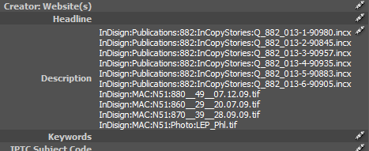
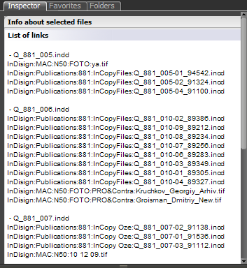
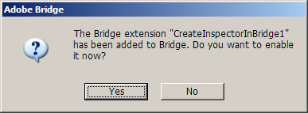

Show InDesign links
Scripts for InDesign and Bridge CS3 version 1.
A while ago I read a post on a scripting forum at indesignsecrets.com, the question was, "Is it possible to show InDesign links in Bridge?" I thought that this was an interesting idea and decided to write a couple of scripts. The first script is for InDesign, can be downloaded from here.
To install this script place it into Adobe\Adobe InDesign CS3\Scripts\Startup Scripts folder (create it if it doesn't exist) and restart InDesign. To uninstall remove it and restart InDesign.
How it works:
Every time you save a document the script gets the list of all links and writes them to Description field of File Information dialog. Then, in Bridge you can open Metadata Panel, make visible Description field in IPTC Core section, select an InDesign file and see the list of its links.
Warning! If you use this field for InDesign files, its content will be overwritten by the script.

Another script is for Bridge — to download it click here (this is preliminary version, not final — just to show you my idea). It creates Inspector Panel which shows lists of links for selected InDesign documents.
Note: I've found out that some versions of Bridge — for example CS3 and CS4 for Mac — interpret incorrectly new line characters in script.
In CS3 for Windows it works as expected, but if I run the same script in CS3/4 for Mac, it displays only the first line. However the information is still there — if I move cursor over the panel, right click and choose copy, then paste it into a text editor, all lines are present there. It looks like Adobe introduced a bug in these versions of Bridge, because even a sample script — SnpCreateTextInspectorPanel.jsx — distributed with Bridge SDK has exactly the same problem,

How to install it:
- Start Bridge, go to Edit > Preferences > Startup Scripts, click Reveal button — a folder will appear.
- Copy CreateInspectorInBridge2.jsx into this folder and restart Bridge.
- When the following dialog appears, click Yes. Or, optionally, enable it in Edit > Preferences > Startup Scripts dialog by turning on the check box in front of the script's name.

To use the script choose Show InDesign Links command in Tools menu and select one or several InDesign files — list of links for every selected file should appear in the Inspector Panel.
Known issues:
After installing a script, while Bridge is loading, a message may appear saying, "Loading startup scripts took over 10 seconds. You can disable scripts in Preferences > Startup Scripts". Meanwhile, the script works as expected.